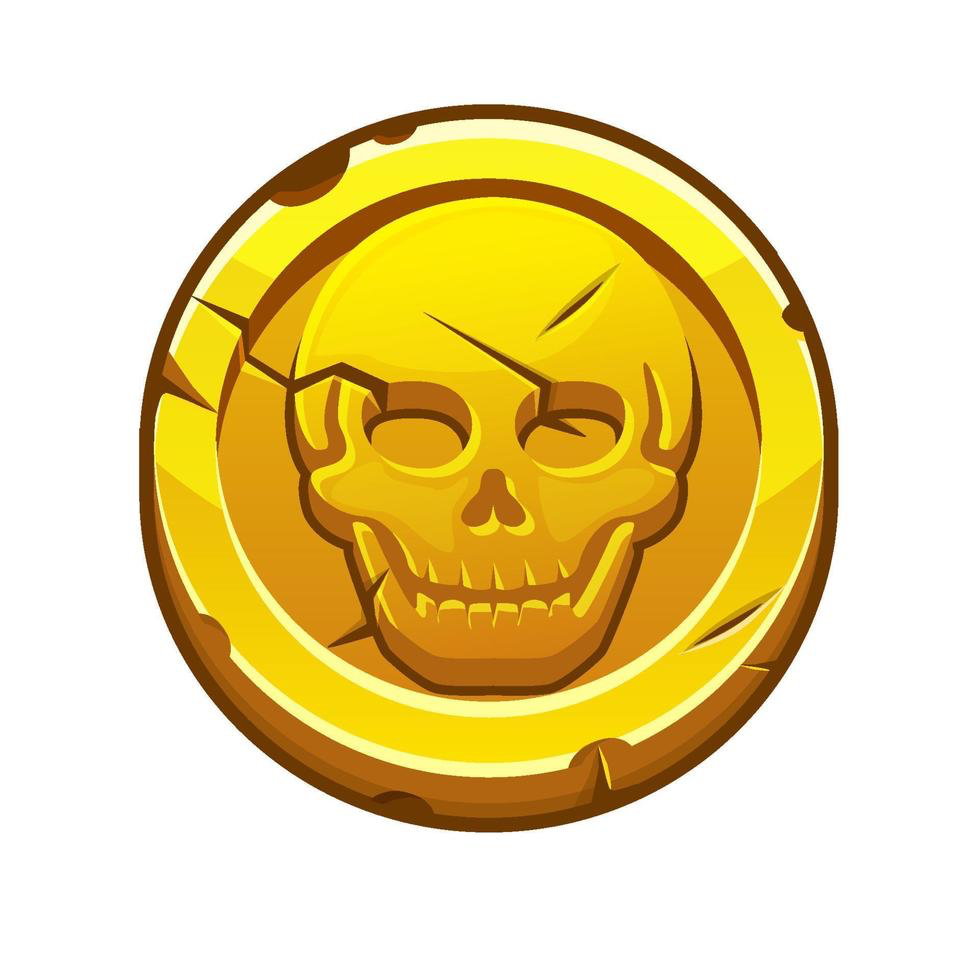
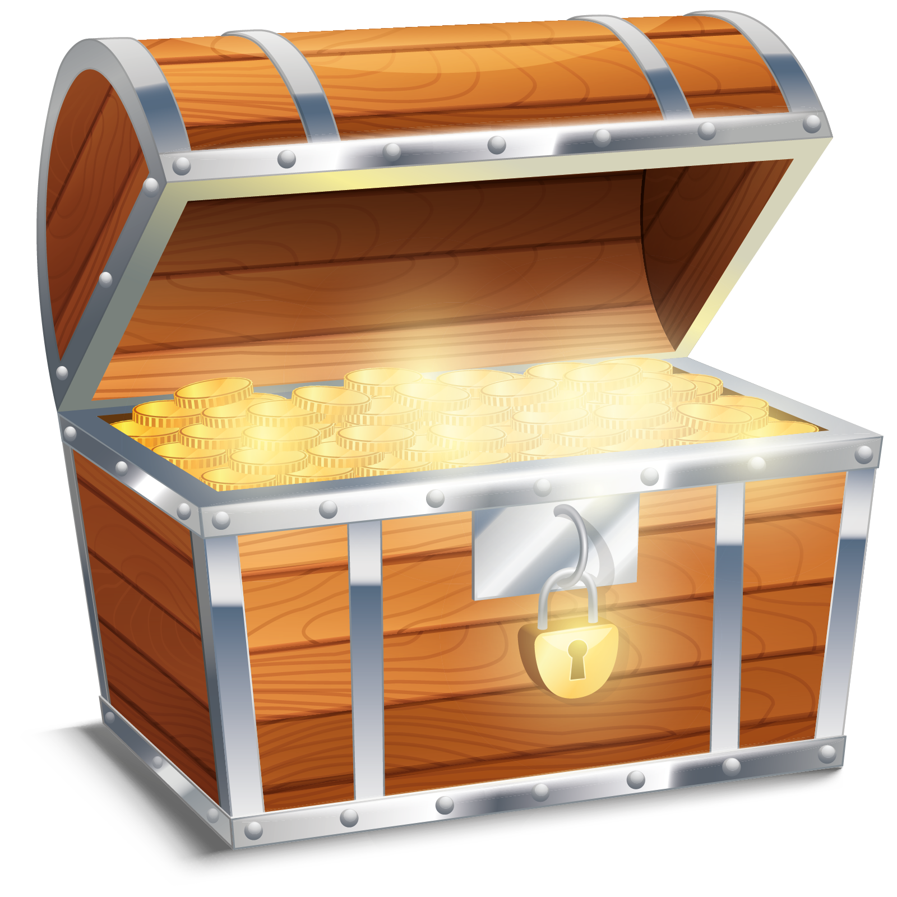

1. Brief Introduction of The Game Concept
The game's main theme is piracy, telling the story of a small seafaring crew and their adventures across a map filled with pirates. The main characters are our captain and his helper, a sailor. The captain also has a parrot. While this crew is traveling on a small ship, their ship gets damaged due to bad weather conditions, and they end up stranded on a lost island.
While our crew tries to survive on the island they have crashed on, they explore and discover things that send them on a journey. The journey that begins this way takes our crew on an adventure where they will set foot on many lands.
2. Gameplay Mechanics (Obstacles, Power-Ups, and Boosters)
2.1 Obstacles
In the first 50 levels of the game, there are 6 different obstacles. Two additional properties are introduced specifically for this game:
- Fragile: The obstacle cannot be cleared by an adjacent match, but it breaks when hit by a power-up. Its intended collection method (such as reaching the bottom row by gravity) only works when the obstacle is still intact.
- Direction-Conditioned: The obstacle reacts only to adjacent matches made from a specific direction. Matches from any other side have no effect.
| Name | Unlocks | Definition & Type |
|---|---|---|
| Rope Knot | Level 2 | Stays in place without being affected by gravity. When an adjacent match is made next to it, the knot unravels. Tier 2 requires two adjacent matches. |
| Seaweed | Level 5 | Sits in front of the match items as a layer and never affects gravity. Cleared by making a match on top of it. Tier 2 requires two matches. |
| Bottle | Level 11 | Affected by gravity. Must be carried to the bottom row to collect it. Fragile: breaks if hit by a power-up, failing the collection. |
| Compass | Level 21 | Points to a specific direction and can only be cleared by a match from that direction. Changes direction randomly every 3 moves. |
| Chest | Level 31 | Sits stationary and releases one Pirate Gold every time an adjacent match is made next to it. Tier 2 requires a falling Key to unlock first. |
| Flagpole | Level 41 | A vertical 1x3 obstacle. After 3 same-colored adjacent matches, the flag reaches the top and clears. Tier 2 has two flags side by side. |
2.2 Power-Ups
The game features four different power-ups created by blasting groups of same-colored cubes:
- Pufferfish (4 cubes): Passive power-up. Puffs up and bursts when a cube of its own color or an obstacle ends up adjacent to it.
- Anchor (5-6 cubes): Two-directional power-up pointing to opposite sides. Clears the entire row or column when triggered.
- Barrel (7-8 cubes): Explodes outward in a diamond-shaped pattern, clearing every item up to 2 tiles away.
- Octopus (9+ cubes): The most powerful single power-up. Clears every cube of its own color across the entire grid.
2.3 Boosters
Four in-game boosters unlock as the player progresses, themed around the pirate world:
- Pirate Hook: Clears a selected single item or damages a selected obstacle.
- Side/Bow Cannon: Clears all items in a selected row/column.
- Bombardment Ship: Throws pirate grenades to three positions on the grid, dealing 3x3 damage each.
- Parrot: Shuffles all cubes on the grid.
3. Meta Game Design
The meta-game is designed around concepts that feel open and connected. The player progresses through level sections (e.g., Levels 1-10) on specific islands. When the player arrives, the island is covered with clouds.
As the player completes levels, they earn stars. These stars are used to build things along the path (like a Camp Fire, Shelter, or Lighthouse), turning the island into a vibrant area. When all levels of an island are completed, a mysterious chest is found containing boosters, power-ups, gold, and a unique collectible item (like a Map Fragment or Pirate's Lost Medallion).
4. Level Design Strategy
Levels are designed with rising and falling difficulty curves in a wave-like pattern to prevent frustration. Early levels are simple geometric grids to teach mechanics. As new obstacles are added, they are combined with each other.


- Introduction & Tutorial Levels: Plentiful move freedom, introducing the first version of each obstacle.
- Combination Levels: Bringing a few obstacle types together to teach the player how to deal with combinations.
- Challenge Levels: Splitting the grid and placing obstacles in hard-to-reach areas, forcing the player to create and use power-ups.
- Single-Obstacle High-Target Levels: Focusing on collecting a large amount of a single obstacle, providing a visually satisfying "blast" experience.
5. UI Design
The home screen and in-game UI are designed to feel as open and uncluttered as possible. The game area is placed exactly in the middle of the scene. The bottom of the screen houses rectangular booster buttons, with no background panel behind them to prevent the screen from feeling crowded.

